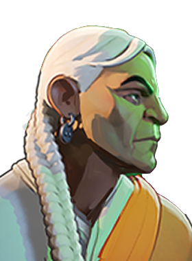

Charged Shot
Charge up a powerful shot that pierces through enemies. Hold the ability key or fire button to hold the shot.

I don't have to be the fastest: just the most clever.
Charge up a powerful shot that pierces through enemies. Hold the ability key or fire button to hold the shot.
Launch yourself high in the air, allowing you to glide slowly. While airborne, you gain weapon damage and multishot on your weapon. Press jump to cancel the glide.
Throw out a trap that begins to arm itself. Once armed, the trap triggers when an enemy enters its radius, applying Curse and Movement Slow that interrupts, Silences, Disarms, and prevents item usage. Hit the trap with a Charged Shot to detonate early with increased radius.
After a cast time, launch a spirit owl that you control and which explodes on impact, damaging and stunning enemies. Hold forward to accelerate the owl. Press jump to release control. Gain permanent Spirit Power for each enemy hero killed with Guided Owl.
A founding member of "The Baxter Society", Wesley Grey Talon spent close to 40 years hunting monsters that preyed on man before finally deciding to find a replacement and lay down his bow. Grey Talon's duties had meant that he never spent much time with his wife and kid, and now that his son had started a family of his own he realized that this was his last chance to reconnect with the people he loved.
Retirement suited Wesley. He made up for lost time with his wife. He doted on his grandkids. He cooked dinner for the whole family every Wednesday. He was happy.
Then he got the call. The authorities claimed that it was a freak accident... that the fire consumed his son's house before anyone got a chance to escape. But Wesley knew better. His son's wife was Ixian... she could snuff out flame with a thought. If their bodies were found burned they had to be dead long before there was a fire.
And so Grey Talon has picked up his bow once more, and when he finds who's responsible there will be a bloody reckoning.